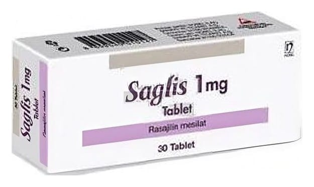

Saglis 1 mg Tablet, 30 Adet

Ne için kullanılır
KT · Bölüm 1SAGLİS 1 mg tablet, 1 mg rasajiline eşdeğer 1,56 mg rasajilin mesilat içerir.
SAGLİS 1 mg tablet, 30 tabletlik blister ambalajlarda karton kutu içinde hasta kullanımına sunulmaktadır.
SAGLİS beyaz renkli, yuvarlak, düz, tek çentikli tabletlerdir.
SAGLİS, Parkinson hastalığının tedavisinde kullanılır.
Parkinson hastalığında, beyinde dopamin üreten hücrelerin kaybı söz konusudur. Dopamin beyinde hareket kontrolünde rol alan bir kimyasaldır. SAGLİS, beyinde dopamin düzeylerinin artmasına ve devam etmesine yardımcı olur.